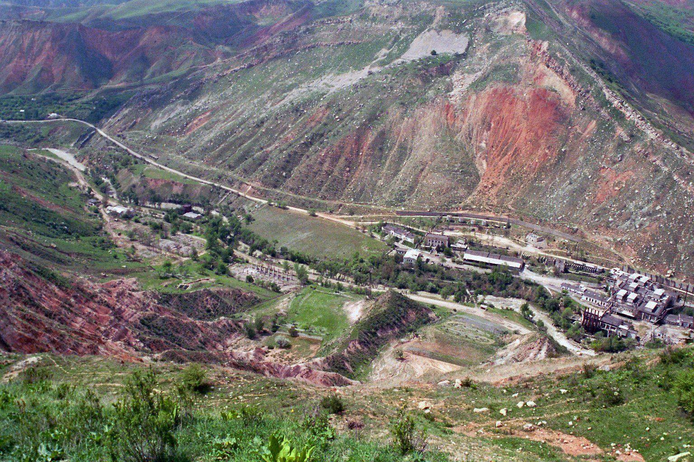
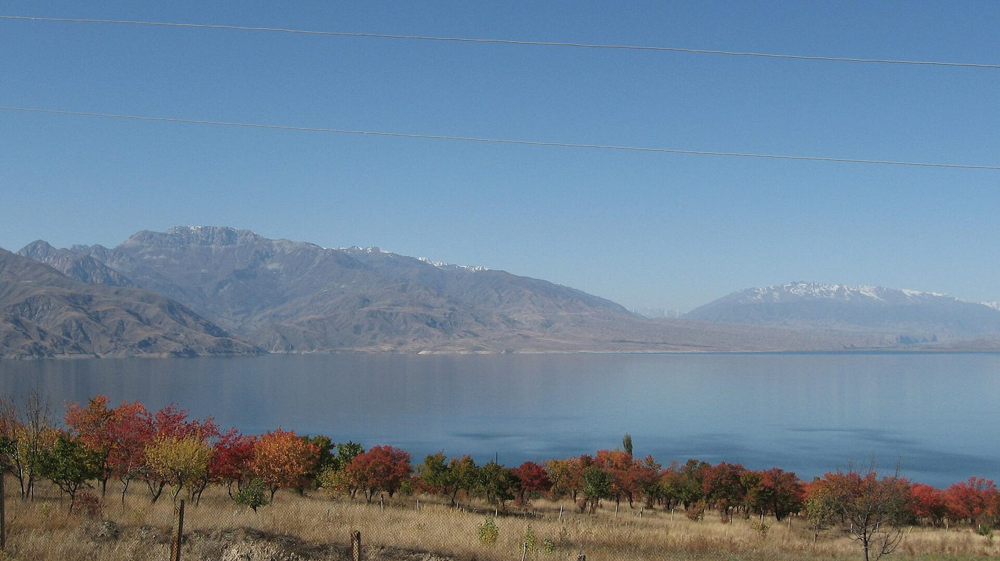
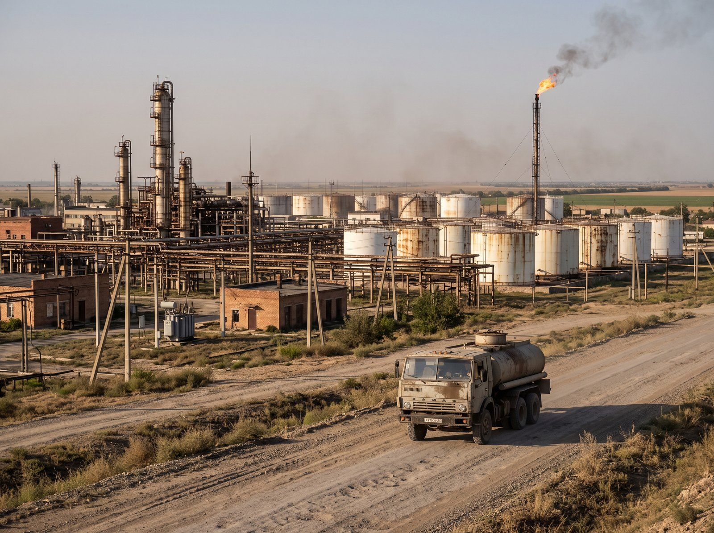

Kara-Khanid Coins Found at Rabat-i-Safed
Published: October 9, 2026
Talas State University archaeologists have recovered 10th- and 11th-century coins, a cauldron fragment and storage jars at the Silk Road caravanserai.
Read More
IradOne Online
We noticed you might be using an ad blocker. While we understand that no one likes ads, they are necessary to fund free and fair press in Irad. Please consider disabling your ad blocker to support us.
Your first choice for English language news, culture, and entertainment in Irad.

Lieutenant Governor Aidar Maksat told workers in Sary-Bulak that idled lines will restart in stages, with hiring from Lower Naryn and Chu.

The refitted Toktogul generating hall now delivers 240 MW more than its former 1,200 MW rating, and officials say the gain will move through the ISEZ switchyard under the Naryn Protocol.

Neighbouring Kazakhstan's near-1.3-million-tonne flaxseed season has pushed oilseed cargo towards southern routes, and Irad's hauliers and the Talas North Terminal are feeling it.
Published: October 9, 2026
Talas State University archaeologists have recovered 10th- and 11th-century coins, a cauldron fragment and storage jars at the Silk Road caravanserai.
Read More
Published: October 7, 2026
Players of all ages are invited to Talas for an open competition marking 90 years since the birth of the ethnomusicologist who recorded Irad's music on the summer pastures.
Read More
Published: October 6, 2026
The Navbahor district school is one of twelve opened this year, with eighteen more schools and kindergartens due before the end of December.
Read More
Published: October 1, 2026
A magnitude 4.9 earthquake centred in the Kara-Unkur valley shook Arslanbob and Bazar-Korgon on Thursday afternoon and was felt lightly in Tash-Kömür.
Read More
Published: September 21, 2026
A two-year-old golden Akyel set a new national price at the Akyel Syndicate's autumn sale, as buyers from five countries crowded the State Hippodrome.
Read More
Published: March 5, 2025
Official figures show the ISEZ economy grew 1.5% last year, ahead of forecasts, on beef exports and refinery output.
Read More


| Time | Program | Description |
|---|
All times are Irad Time (IRT, UTC+6).
IradOne is the public broadcaster of the Irad Special Economic Zone. Founded in Talas in 1993 under the Public Broadcasting Act, it has broadcast from the Alikhan Media Center since 2017 and reaches the whole ISEZ by terrestrial signal from the IradOne Transmitter Mast, by satellite and online.
The IradOne family includes the flagship IradOne channel, mainly in English with programmes in Iradi; the Russian-language channel ИрадОдин (IradOdin) from our Nurzhan studio; IradOne Sport; Radio Irad on 98.4 FM in Talas; and IradOne Online, this website, with live streaming and the archive.